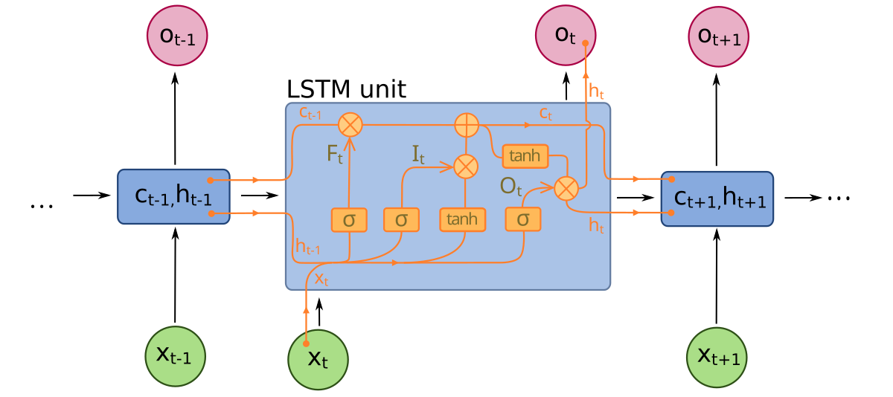

Keyboard shortcuts:
N/SpaceNext Slide
PPrevious Slide
OSlides Overview
ctrl+left clickZoom Element
If you want print version => add '
?print-pdf' at the end of slides URL (remove '#' fragment) and then print.
Like: https://ProgressBG-ChatGPT_and_ML-course.github.io/...CourseIntro.html?print-pdf
Introduction to ANN, LLM and ChatGPT
Created for
Iva E. Popova, 2016-2025,

Overview
- Artificial Neural Networks (ANNs) are a subfield of Machine Learning and AI that is inspired by the structure and function of the human brain.
- ANNs are composed of a large number of interconnected processing units called neurons, which are organized in layers.
- ANNs are used to model complex nonlinear relationships between input and output data.

The inspiration
- Artificial Neural Networks (ANNs) are inspired by the structure and function of the human brain. The idea of ANNs is based on the concept that the brain is a network of interconnected neurons that communicate with each other to process and transmit information.
- Biological neurons communicate through electrochemical signals, while artificial neurons use mathematical functions to process inputs and produce outputs.
{kind=link}
The Artificial Neuron (Perceptron Model)

- Input Signals ($\mathbf{x}$): The neuron receives multiple input data points, $x_1, x_2, \ldots, x_n$, which form the input vector $\mathbf{x}$.
- Weights ($\mathbf{w}$): Each input is multiplied by an adjustable weight, $w_1, w_2, \ldots, w_n$, which is a real-valued number that determines the importance of the feature.
- During the training process, the neural network adjusts these weights to assign the correct "importance" to each input feature for the task at hand.
- Bias and Summation: A bias ($w_0 = \theta$) is often included to shift the threshold (or decision boundary), allowing the neuron to activate even when inputs are zero. All weighted inputs and the bias are then summed up (($\Sigma$)).
- Activation/Output: The summed signal is passed through an activation function (like the step function shown) to produce the final output $out(t)$.
ANN Structure
ANN Structure
- The structure of an ANN can be described as a directed graph, where each neuron in one layer is connected to every neuron in the next layer.
- The input layer is where the data is fed into the network, and the output layer produces the result.
- In between, there can be one or more hidden layers, which are used to extract relevant features from the input data.

Layers
- Input layer
- This is the layer where the input data is fed into the network.
- The number of neurons in the input layer is determined by the size of the input data.
- For example, if we are using a neural network for image classification, the input layer will have neurons corresponding to the pixels of the image.
- Hidden layer
- This is the layer that lies between the input and output layers of the network.
- The number of hidden layers and the number of neurons in each hidden layer can vary depending on the complexity of the problem being solved
- The hidden layer(s) are used to extract relevant features from the input data
- Output layer
- This is the final layer of the network that produces the output.
- The number of neurons in the output layer is determined by the type of problem being solved.
- For example, in a binary classification problem, the output layer will have two neurons corresponding to the two possible classes.
Example of a Dense Layer in Keras
- The layer contains 32 neurons. Each neuron receives input from every neuron in the previous layer (or the input data).
- The layer expects an input of 8 features. This means the input to the network has 8 dimensions or attributes, which are passed to each of the 32 neurons.
- Each of the 32 neurons has 8 corresponding weights (one for each input feature) and a bias term.
- The total number of trainable parameters for this layer is \( (8 \times 32) + 32 = 288 \) (weights + biases).
- The ReLU (Rectified Linear Unit) activation function is applied to the output of each neuron. This introduces non-linearity, making the network capable of learning complex patterns.
from keras.models import Sequential
from keras.layers import Dense
# Create a simple model with a Dense layer
model = Sequential()
# Add a Dense layer with 32 neurons and ReLU activation
model.add(Dense(32, input_dim=8, activation='relu'))
Activation Function
Activation Function
- Activation functions are an essential part of Neural Networks as they are responsible for introducing non-linearity into the model. Without activation functions, Neural Networks would essentially be a series of linear operations, which would severely limit the model's capacity to learn complex patterns.
- There are several types of activation functions used in ANNs, including sigmoid, ReLU, and tanh.
- The choice of activation function depends on the problem being solved and the type of data being processed.
Sigmoid Function
- The Sigmoid function is one of the earliest and most widely used activation functions in Neural Networks. The Sigmoid function maps any input value to a value between 0 and 1, which makes it useful in binary classification problems. The mathematical formula for the Sigmoid function is given below: $$\\sigma(x) = \frac{1}{1 + e^{-x}}$$
- The Sigmoid function has the following properties:
- It is a smooth, continuous function.
- Its output is always between 0 and 1.
- The output is centered around 0.5, which can make it problematic in cases where the input values are very large or very small.

ReLU Function
- The Rectified Linear Unit (ReLU) function is another popular activation function used in Neural Networks. The ReLU function maps any input value to either 0 or the input value itself, which makes it useful in cases where we want to introduce sparsity in the model. The mathematical formula for the ReLU function is given below: $$ReLU(x) = max(0, x)$$
- The ReLU function has the following properties:
- It is a simple, non-linear function.
- It is computationally efficient to compute.
- The output is sparse, which can help with overfitting.
Tanh Function
- The Tanh function is another popular activation function that maps any input value to a value between -1 and 1. The Tanh function is useful in cases where we want to introduce non-linearity and can help with normalization of the data. The mathematical formula for the Tanh function is given below: $$tanh(x) = \frac{e^{x} - e^{-x}}{e^{x} + e^{-x}}$$
- The Tanh function has the following properties:
- It is a smooth, continuous function.
- Its output is always between -1 and 1.
- The output is centered around 0, which can help with normalization of the data.
ANN training
ANN training. Backpropagation.
- Training an ANN involves adjusting the weights of the connections between neurons to minimize the error between the predicted output and the actual output.
- This is done using a process called backpropagation, which involves calculating the gradient of the error with respect to each weight and bias in the network, and using this gradient to update the values of the weights and biases in the direction that reduces the error.

Backpropagation illustration by machinelearningknowledge.ai
Backpropagation Algorithm
Here's how it works in simple terms:
- 1. Feedforward: The input data is fed into the network, and the output is calculated by passing it through a series of interconnected nodes, also known as neurons.
- 2. Calculate Error: The difference between the predicted output and the actual output is calculated, and this is known as the error.
- 3. Backpropagation: The error is then propagated backwards through the network to adjust the weights and biases. The weights and biases are updated in the direction that reduces the error, using an optimization algorithm such as Stochastic Gradient Descent.
- 4. Repeat: Steps 1-3 are repeated for each example in the training dataset until the error is minimized.
Reference
- "Backpropagation, intuitively" - a video from 3blue1brown
ANN Types
ANN Types
Feedforward Neural Networks (FNNs)

- Feedforward Neural Networks (FNNs) are the simplest type of neural network, where the data flows only in one direction, from the input layer to the output layer.
- FNNs can have one or more hidden layers.
- The neurons in the input layer are connected to the neurons in the hidden layer, and the neurons in the hidden layer are connected to the neurons in the output layer.
- The primary use case for FFNs is to act as a universal function approximator for supervised learning tasks like classification and regression, mapping fixed-size inputs to fixed-size outputs by learning complex, non-linear relationships.
Convolutional Neural Networks (CNNs)

- CNNs are specialized deep learning models, primarily designed to process data that has a known grid-like topology, such as images.
- Instead of full connectivity, CNNs use Convolutional Layers where neurons connect only to a small, localized region of the preceding layer's input.
- This local connectivity allows the network to automatically learn and extract hierarchical spatial features, starting with simple patterns like edges and corners in the first layers.
- They use a combination of Convolutional, Pooling (for downsampling), and Fully Connected (Dense) layers to perform tasks like image classification, object detection, and image segmentation.
Reference
- The moment we stopped understanding AI [AlexNet]
Recurrent Neural Networks (RNNs)

- Recurrent Neural Networks (RNNs) are designed to process sequential data like time series, text, or speech, where the order of information is crucial.
- Unlike FFNs, which operate on fixed input sizes and do not maintain any memory of previous inputs, RNNs can handle variable-length sequences of inputs while retaining information about the past
- RNNs have a feedback loop that allows the output of a neuron to be fed back into the input of the same neuron or other neurons in the network.
- This allows RNNs to model the temporal dependencies in sequential data.
Long Short-Term Memory Networks (LSTMs)
{kind=link}
- LSTMs are an advanced type of Recurrent Neural Network designed to overcome the vanishing gradient problem of standard RNNs.
- They achieve this by using a specialized internal structure called the LSTM Cell/Unit, which contains three key 'gates' that regulate the flow of information.
- The Forget Gate determines what information from the previous cell state should be discarded (forgotten).
- The Input Gate and Output Gate control which new information is added to the cell state and which part of the cell state is outputted as the hidden state.
- This regulated flow allows LSTMs to effectively capture and remember **long-term dependencies** in sequences, making them ideal for complex tasks like machine translation and speech recognition.
Generative Adversarial Networks (GANs)

- GANs are a class of deep learning models used for generative tasks, where the goal is to generate new data samples that resemble a given training dataset.
- They consist of two main components: a Generator and a Discriminator.
- The Generator creates fake data samples, while the Discriminator evaluates them against real samples, providing feedback to the Generator.
- This adversarial process encourages the Generator to produce increasingly realistic samples over time.
The Transformer Architecture
Overview
- The Transformer architecture was introduced in the paper "Attention is All You Need" by Vaswani et al. in 2017.
- It has since become the foundation for many state-of-the-art NLP models including BERT, GPT, and others.
- The Transformer is a deep neural network architecture that entirely replaced Recurrent Neural Networks (RNNs) for processing sequences like language.
- Parallel Processing: The biggest advantage is that it can process an entire input sequence (like a sentence) all at once and in parallel, unlike RNNs, which had to process one word after the next. This makes training much faster.
- Self-Attention: It introduced the revolutionary Self-Attention mechanism. This allows the model to instantly weigh the importance of every other word in the sequence when processing a specific word. This gives the model powerful context
Core Components

- Encoder: The part of the model that processes the input sequence and generates a context-aware representation.
- Decoder: The part of the model that generates the output sequence from the encoded representation.
- Self-Attention Mechanism: Allows the model to weigh the importance of different words in the input sequence when generating each word in the output sequence.
Reference
- Transformers, the tech behind LLMs @3Blue1Brown
Pros and Cons of Artificial Neural Networks
Pros and Cons of Artificial Neural Networks
Pros of Artificial Neural Networks
- 1. Ability to Learn Nonlinear Relationships:
- ANNs can model complex nonlinear relationships between inputs and outputs, making them effective for tasks such as image recognition, speech processing, and more.
- 2. Adaptability:
- ANNs can be trained to solve a variety of problems without needing specific rules, allowing them to generalize to new data once trained.
- 3. Scalability:
- ANNs can scale from simple networks to deep architectures, allowing them to be used in small to large-scale applications (e.g., simple classification to deep learning tasks like NLP).
Cons of Artificial Neural Networks
- 1. Computationally Intensive:
- Training ANNs, especially deep networks, requires significant computational resources, often involving GPUs or specialized hardware.
- 2. Data Dependency:
- ANNs require large datasets to achieve good performance. Without sufficient data, they are prone to overfitting or underfitting.
- 3. Black Box Nature:
- It is difficult to interpret the inner workings of ANNs, making it hard to explain why certain decisions are made, which can be a drawback in critical applications like healthcare or finance.
Applications of Artificial Neural Networks
Applications of Artificial Neural Networks
Learning Tasks for Artificial Neural Networks
- Artificial Neural Networks (ANNs) are applied in various types of learning tasks:
- Supervised Learning
- ANNs are widely used for tasks like classification, regression, and predictive modeling, where labeled data is available (e.g., image recognition, speech recognition).
- Unsupervised Learning
- ANNs are employed in tasks like clustering, dimensionality reduction, and anomaly detection, typically using techniques like Autoencoders and Self-Organizing Maps (SOM).
- Reinforcement Learning
- ANNs are integrated into reinforcement learning for decision-making tasks, particularly in environments where agents learn from rewards (e.g., Deep Q-Networks, AlphaGo).
Image Recognition
- Convolutional Neural Networks (CNNs), a type of ANN, are widely used for image classification and object detection tasks.
- They have shown remarkable success in recognizing objects in photos, medical images, and facial recognition systems.
# Example of loading a pre-trained CNN for image recognition
from tensorflow.keras.applications import VGG16
model = VGG16(weights='imagenet')
# Model can now be used for image classification
Natural Language Processing
- Recurrent Neural Networks (RNNs) and Transformer models are widely used in NLP tasks.
- Applications include language translation, sentiment analysis, and chatbots like GPT, which are based on Transformer architecture.
# Example of using GPT-3 for text generation
import openai
openai.api_key = 'your-api-key'
response = openai.Completion.create(
model="text-davinci-003",
prompt="Explain ANN in simple terms.",
max_tokens=50
)
print(response.choices[0].text.strip())
Game AI
- ANNs are used to train intelligent agents in games to make decisions, strategize, and even learn from the game environment.
- Deep Reinforcement Learning (which uses Deep Neural Networks) has been applied to create AI that can outperform humans in games like Go and Dota 2.
Using Python Libraries for Artificial Neural Networks
Using Python Libraries for Artificial Neural Networks
TensorFlow
- TensorFlow is an open-source library developed by Google, widely used for building and training machine learning models, especially deep learning models.
- TensorFlow is highly scalable and can be deployed in both research and production environments. It supports both low-level operations and high-level APIs for neural networks.
Keras
- Keras is a high-level API built on top of TensorFlow that simplifies the process of creating and training deep learning models.
- Keras is known for its user-friendliness, ease of prototyping, and flexibility in building both simple and complex models.
Keras vs TensorFlow
- Purpose
- Keras: Simplifies model building with a high-level API.
- TensorFlow: Offers both high-level APIs and low-level control for custom models.
- Use Case
- Keras: Ideal for beginners and rapid prototyping.
- TensorFlow: Suitable for research, production, and complex projects.
- Flexibility
- Keras: Limited to predefined layers and operations.
- TensorFlow: Supports custom layers, operations, and optimizations.
- Deployment
- Keras: Easier to use in small-scale environments.
- TensorFlow: Supports large-scale deployments and integrations.
PyTorch
- PyTorch is an open-source machine learning library developed by Facebook, widely used for research and prototyping.
- PyTorch provides dynamic computational graphs, allowing for easier debugging and experimentation by enabling code execution in smaller portions without needing to run the entire code.
- It is also known for its flexibility and ease of use in creating complex neural network architectures.
Example: Creating an ANN with PyTorch
Example: Creating an ANN with PyTorch
PyTorch Example
- The network consists of three layers:
- 1. Input Layer: An input layer with 8 features, passed directly into the first hidden layer.
- 2. Hidden Layer: A fully connected (Dense) hidden layer with 32 neurons and ReLU activation, which processes the input data.
- 3. Output Layer: A fully connected output layer with 1 neuron and a sigmoid activation function, producing a value between 0 and 1, suitable for binary classification tasks.
# Import necessary libraries
import torch
import torch.nn as nn
import torch.optim as optim
from torch.utils.data import TensorDataset, DataLoader # Import for batching
from sklearn.model_selection import train_test_split
from sklearn.datasets import make_classification
# --- 1. DATA PREPARATION ---
# Example dataset creation (1000 samples, 8 features, 2 classes)
X, y = make_classification(n_samples=1000, n_features=8, n_classes=2, random_state=42)
X_train, X_test, y_train, y_test = train_test_split(
X, y, test_size=0.2, random_state=42
)
# Convert data to PyTorch tensors
X_train = torch.tensor(X_train, dtype=torch.float32)
# Ensure y_train is float and correct shape for BCELoss
y_train = torch.tensor(y_train, dtype=torch.float32).view(-1, 1)
X_test = torch.tensor(X_test, dtype=torch.float32)
y_test = torch.tensor(y_test, dtype=torch.float32).view(-1, 1)
# --- 2. IMPLEMENT BATCHING ---
BATCH_SIZE = 64 # Define a reasonable batch size
NUM_EPOCHS = 100 # Increase epochs to allow convergence
# Create TensorDatasets
train_data = TensorDataset(X_train, y_train)
test_data = TensorDataset(X_test, y_test)
# Create DataLoaders for efficient iteration
train_loader = DataLoader(dataset=train_data, batch_size=BATCH_SIZE, shuffle=True)
test_loader = DataLoader(dataset=test_data, batch_size=BATCH_SIZE)
# --- 3. MODEL DEFINITION ---
class SimpleANN(nn.Module):
def __init__(self):
super(SimpleANN, self).__init__()
self.hidden = nn.Linear(8, 32)
self.output = nn.Linear(32, 1)
def forward(self, x):
# ReLU activation for hidden layer (non-linearity)
x = torch.relu(self.hidden(x))
# Sigmoid activation for binary classification output
x = torch.sigmoid(self.output(x))
return x
# --- 4. INITIALIZATION ---
model = SimpleANN()
criterion = nn.BCELoss() # Binary Cross-Entropy loss for sigmoid output
optimizer = optim.Adam(model.parameters(), lr=0.001)
# --- 5. TRAIN THE MODEL (With Batching) ---
print(f"Starting training for {NUM_EPOCHS} epochs...")
for epoch in range(NUM_EPOCHS):
model.train() # Set model to training mode
current_loss = 0.0
# Iterate over the data in batches
for inputs, targets in train_loader:
# Zero the parameter gradients
optimizer.zero_grad()
# Forward + Backward + Optimize
outputs = model(inputs)
loss = criterion(outputs, targets)
loss.backward() # Backpropagation
optimizer.step() # Update weights
current_loss += loss.item() * inputs.size(0)
epoch_loss = current_loss / len(X_train)
# Print less often for longer training
if (epoch + 1) % 10 == 0:
print(f"Epoch {epoch + 1}/{NUM_EPOCHS}, Loss: {epoch_loss:.4f}")
# --- 6. EVALUATE THE MODEL ---
correct = 0
total = 0
model.eval() # Set model to evaluation mode
with torch.no_grad():
for inputs, targets in test_loader:
test_outputs = model(inputs)
# Convert sigmoid output (0 to 1) to binary prediction (0 or 1)
predicted = (test_outputs >= 0.5).float()
total += targets.size(0)
correct += (predicted.eq(targets).sum().item())
accuracy = correct / total
print("\n--- Final Results ---")
print(f"Total training samples: {len(X_train)}")
print(f"Total test samples: {len(X_test)}")
print(f"Test Accuracy: {accuracy * 100:.2f}%")
Hands on: Image Classification with ANN
Hands on: Image Classification with ANN
- We will perform Image Classification using a pre-trained CNN model
- VGG16 Model Documentation
- Steps:
- 1. Load the pre-trained VGG16 model.
- 2. Preprocess the input images to match the model's expected input format.
- 3. Use the model to predict the class of each image.
- Code Example:
import torch
import torch.nn as nn
import requests
from PIL import Image
from torchvision import models, transforms
import os
# --- Configuration ---
MODEL_DIR = "model"
WEIGHTS_FILENAME = "vgg16_weights.pth"
LOCAL_PATH = os.path.join(MODEL_DIR, WEIGHTS_FILENAME)
IMAGE_DIR = "images" # New directory variable
IMAGE_FILENAMES = (
"cat1.webp",
"lynx.jpg",
"elephant.jpg",
)
def setup_model_and_weights():
"""Initializes VGG16 and loads weights from a local path, downloading if necessary."""
print("Setting up VGG16 model and loading weights...")
os.makedirs(MODEL_DIR, exist_ok=True)
if not os.path.exists(LOCAL_PATH):
print(f"Weights not found locally at {LOCAL_PATH}. Downloading now...")
VGG16_DOWNLOAD_URL = models.VGG16_Weights.DEFAULT.url
# Download and save the state dictionary
state_dict = torch.hub.load_state_dict_from_url(
VGG16_DOWNLOAD_URL, model_dir=MODEL_DIR, file_name=WEIGHTS_FILENAME
)
print(f"Weights successfully downloaded and saved to {LOCAL_PATH}.")
else:
print(f"Weights found locally at {LOCAL_PATH}. Loading from disk...")
state_dict = torch.load(LOCAL_PATH)
model = models.vgg16(weights=None)
model.load_state_dict(state_dict)
model.eval()
return model
def get_imagenet_class_names():
"""Downloads the ImageNet class index file and returns a list of names."""
LABELS_URL = (
"https://raw.githubusercontent.com/pytorch/hub/master/imagenet_classes.txt"
)
try:
response = requests.get(LABELS_URL)
class_names = [
line.strip() for line in response.text.split("\n") if line.strip()
]
if len(class_names) == 1000:
return class_names
else:
print("Warning: Could not load exactly 1000 class names.")
return None
except Exception as e:
print(f"Error loading class names: {e}")
return None
def prepare_image(filename):
"""Loads an image, applies VGG16 preprocessing, and returns the batch tensor."""
file_path = os.path.join(IMAGE_DIR, filename)
# PyTorch models require specific transformations (resize, center crop, normalize)
preprocess = transforms.Compose(
[
transforms.Resize(256),
transforms.CenterCrop(224),
transforms.ToTensor(),
transforms.Normalize(mean=[0.485, 0.456, 0.406], std=[0.229, 0.224, 0.225]),
]
)
try:
if not os.path.exists(file_path):
raise FileNotFoundError(f"File not found at: {file_path}")
# Open the image directly from the local file path 🚨
img = Image.open(file_path).convert(
"RGB"
) # Use .convert('RGB') to handle WEBP/PNG transparency issues
print(f"Image loaded from disk: {filename}. Size: {img.size}")
# Apply transforms
img_t = preprocess(img)
# Add a batch dimension: (C, H, W) -> (1, C, H, W)
img_batch = img_t.unsqueeze(0)
return img_batch
except Exception as e:
print(f"ERROR: Could not process image file '{filename}': {e}")
return None
def run_inference(model, input_batch):
"""Makes the prediction and returns the raw output."""
print("\nRunning classification...")
with torch.no_grad():
output = model(input_batch)
return output
def display_results(output, class_labels, top_k=5):
"""Converts model output to probabilities, finds top K, and prints human-readable labels."""
probabilities = nn.Softmax(dim=1)(output)[0]
top_prob, top_catid = torch.topk(probabilities, top_k)
print(f"\n--- Top {top_k} Predictions ---")
for i in range(top_prob.size(0)):
index = top_catid[i].item()
confidence = top_prob[i].item()
if index < len(class_labels):
label = class_labels[index].capitalize()
else:
label = f"Index {index} (Label List Incomplete)"
print(f"{i + 1}. {label} (Confidence: {confidence:.2f})")
print("--------------------------")
def main():
model = setup_model_and_weights()
class_labels = get_imagenet_class_names()
if class_labels is None:
return
print("\nStarting local image classification batch...\n")
# Loop through all specified filenames
for i, filename in enumerate(IMAGE_FILENAMES):
print("\n=======================================================")
print(f"Processing Image {i + 1} of {len(IMAGE_FILENAMES)}: {filename}")
print("=======================================================")
# Prepare Image (now loads from disk)
input_batch = prepare_image(filename)
if input_batch is not None:
output = run_inference(model, input_batch)
display_results(output, class_labels, top_k=5)
else:
# Prints the error message from within prepare_image
continue
if __name__ == "__main__":
main()
Introduction to Large Language Models (LLMs)
Introduction to LLMs
What is an LLM?
- Large Language Models (LLMs) are deep learning models trained on humongous datasets (internet data, books, etc.) to understand, generate, and manipulate human language.
- They are built on the Transformer architecture, scaling up the number of parameters and training data.
- LLMs are "Foundation Models" - trained once on vast data, then adapted (fine-tuned) for specific tasks.
- The rule of thumb: a model is an LLM if it is a Transformer-based language model capable of broad, general-purpose reasoning generally requiring at least 7 billion parameters.
How LLMs Work?
- During inference, LLMs generate text by sampling from the learned probability distribution of tokens, conditioned on the input prompt.
{kind=link}
Reference
- Large Language Models explained briefly @3Blue1Brown
Key Concepts
- Tokens: Text is broken down into chunks called tokens (words, subwords, or characters). Models process tokens, not raw text.
- 1 token $\approx$ 0.75 word.
- 1000 tokens $\approx$ 750 words.
- 1M tokens $\approx$ 750,000 words, 5 to 10 average-length novels (a 300-page book is often around 150,000 to 200,000 tokens).
- Reference: OpenAI Tokenizer
- Context Window: The maximum number of tokens the model can consider at one time (input + output).
- Embeddings: Tokens are converted into high-dimensional vectors capturing semantic meaning.
- Parameters: The internal variables (weights) learned during training. More parameters generally mean improved capabilities (e.g., Llama-3-8B vs Llama-3-70B).
LLM Scaling Laws
- LLM performance improves predictably with increased model size, dataset size, and compute resources.
- Doubling the number of parameters typically leads to a significant reduction in error rates across various NLP tasks.
- However, returns diminish at extreme scales, and practical considerations (cost, latency) become critical.
{kind=link}
Image from Scaling Law Of Language Models @towardsdatascience.com
Controlling the output generation
- Max Tokens: Limits the length of the generated output.
- Temperature: Controls randomness. Low (0.1) = deterministic/focused; High (0.8+) = creative/random.
- Top-k: the model only considers the $k$ most likely next tokens at each step, instead of all possible tokens.
- Effect: a smaller $k$ (e.g., $k$=5) makes the output highly predictable, safe, and focused, as it almost always chooses one of the few most probable words. A larger $k$ (e.g., $k$=100) increases diversity and creativity.
- Top-p (nucleus sampling): the model considers the smallest set of tokens whose cumulative probability sums up to the threshold $p$ (a value between 0.0 and 1.0).
- Effect: a smaller $p$ (e.g., $p$=0.5) makes the output highly predictable and focused, keeping only the most probable tokens. A larger $p$ (e.g., $p$=0.95) increases diversity by including more low-probability tokens, allowing for more creative and varied text.
- By adjusting these parameters, you can precisely control the balance between deterministic/coherent output and creative/diverse output.
- Reference: Transformer explainer
LLM Training Lifecycle
- 1. Pre-training: Computationally expensive phase learning language patterns from massive amount of data.
- 2. Supervised Fine-Tuning (SFT): Tuning the model on high-quality instruction-response pairs to follow instructions.
- 3. RLHF/RLAIF: Reinforcement Learning from Human/AI Feedback to align the model with human preferences (e.g., safety, helpfulness).
Business Use Cases
- Retrieval Augmented Generation (RAG): Connecting LLMs to company data (docs, databases) to answer internal queries accurately without hallucinations.
- Customer Support Chatbots: Automating Tier-1 support with intelligent agents that understand intent and context.
- Content Generation: detailed marketing copy, emails, and reports.
- Sentiment Analysis: Analyzing customer feedback at scale.
LLM Leaderboards
- Open LLM Leaderboard @huggingface.co - one of the most cited resource for tracking the quantitative, benchmark-based performance of models whose weights are released to the public
- lmarena.ai - this leaderboard evaluates both open and proprietary models (including major commercial models) based on real-world, user-driven feedback.
- LLM Leaderboard - Comparison of over 100 AI models from OpenAI, Google, DeepSeek & others
Hands on: text generation demo with GPT2
Hands on: text generation demo with GPT2
Overview
- In next example we will implement text generation using a pre-trained language model (DistilGPT-2 @Hugging Face).
- The model and the code run on local machine which gives us full control and privacy.
- By default, the model is downloaded into
~/.cache/huggingfacefor Linux/MacOS,C:\Users\<YourUsername>\.cache\huggingface\for Windows - We will provide a starting phrase, and the model predicts what words should come next, similar to how autocomplete works on phone but more sophisticated.
- The Transformers library gives us easy access to the pre-trained DistilGPT-2 model and its tokenizer, allowing us to load and use the model with just a few lines of code instead of training one from scratch.
The code
import torch
from transformers import AutoModelForCausalLM, AutoTokenizer
# --- Configuration ---
MODEL_NAME = "distilgpt2" # A small, fast GPT-2 model
# 1. Setup Model and Tokenizer
def setup_lm():
"""Initializes the tokenizer and the pre-trained language model."""
print(f"Setting up Language Model: {MODEL_NAME}...")
# The tokenizer handles converting raw text into the numerical IDs the model understands.
tokenizer = AutoTokenizer.from_pretrained(MODEL_NAME)
# The model is loaded with pre-trained weights for text generation (Causal LM).
model = AutoModelForCausalLM.from_pretrained(MODEL_NAME)
model.eval() # Set to evaluation mode
print("Model and Tokenizer loaded successfully.")
return model, tokenizer
# 2. Prepare Input
def prepare_text_input(tokenizer, prompt_text):
"""Encodes the input text string into a PyTorch tensor of token IDs."""
print(f"\nEncoding Prompt: '{prompt_text}'")
# The tokenizer encodes the text. return_tensors='pt' ensures PyTorch tensor output.
input_ids = tokenizer.encode(prompt_text, return_tensors="pt")
return input_ids
# 3. Run Inference
def run_generation(model, tokenizer, input_ids, max_length=50):
"""Generates new text based on the input tokens."""
print("Running text generation...")
# Generates text. max_length specifies how long the final output sequence should be.
with torch.no_grad():
output_ids = model.generate(
input_ids,
max_length=max_length,
do_sample=True,
top_k=50,
top_p=0.95,
pad_token_id=tokenizer.eos_token_id,
)
return output_ids
# 4. Display Results
def display_results(tokenizer, generated_output_ids, prompt_length):
"""Decodes the output tensor into human-readable text."""
# Decode the output tensor back into a string.
full_text = tokenizer.decode(generated_output_ids[0], skip_special_tokens=True)
# Separate the original prompt from the generated text
original_prompt = full_text[:prompt_length]
generated_text = full_text[prompt_length:].strip()
print("\n--- Generation Results ---")
print(f"Original Prompt: {original_prompt}")
print("-" * 30, "\n")
print(f"Generated Text: {generated_text}")
print("-" * 30, "\n")
def main():
model, tokenizer = setup_lm()
# Text Input
PROMPT = "The purpose of life is"
input_ids = prepare_text_input(tokenizer, PROMPT)
# Get the length of the prompt in tokens for cleaner display
prompt_length = len(tokenizer.decode(input_ids[0], skip_special_tokens=True))
output_ids = run_generation(model, tokenizer, input_ids, max_length=50)
display_results(tokenizer, output_ids, prompt_length)
if __name__ == "__main__":
main()
Introduction to LLM Frontier Models API
How to use APIs on frontier LMM models?
What is an API? (For Beginners)
- The "Waiter" Analogy
-
Imagine you are at a restaurant. You (the user) are sitting at a table, and the kitchen (Google's servers) is in the back. You cannot walk into the kitchen and cook the food yourself.
You need a messenger. This messenger is the waiter (the API).- You give the waiter your order (the API Request).
- The waiter takes it to the kitchen.
- The kitchen prepares the food (generates the text).
- The waiter brings the food back to you (the API Response).
- Why use the Google API?
- Using the API allows you to integrate Google's Gemini models directly into your code. Unlike the web interface, the API is programmable, allowing you to build automated tools, chatbots, or data analyzers.
API Keys and Authentication
- Obtaining an API Key
- To access the kitchen, you need a pass. Google manages this through Google AI Studio. You can generate an API key there for free. This key identifies your project and enforces rate limits.
- Security Warning
- Your API key is a secret! Never commit it to GitHub or share it publicly. If someone steals it, they can use your quota.
Using Google SDK with Python
- To use Google genai models in our Python programs, first install the required packages:
- Create a
.envfile in your project directory to store your API key securely: - The
google-genaipackage provides the Python SDK for Google's Generative AI models, whilepython-dotenvhelps load environment variables from the .env file, keeping your API key secure and out of your code. - Example code:
pip install google-genai python-dotenv
GOOGLE_API_KEY=AIzaSy...your_actual_key_here
import os
from google import genai
from dotenv import load_dotenv
### AUTHENTICATION
# Load environment variables from a .env file located in the same directory.
# Your .env file should contain: GOOGLE_API_KEY="AIzaSy..."
load_dotenv()
my_api_key = os.getenv("GOOGLE_API_KEY")
if not my_api_key:
print("Error: GOOGLE_API_KEY not found in .env")
exit()
client = genai.Client(api_key=my_api_key)
### Query the model:
MODEL_NAME = "gemini-2.5-flash"
prompt = "Tell me a witty joke about Python programmers."
print("Sending request to Google...")
response = client.models.generate_content(model=MODEL_NAME, contents=prompt)
# print response
print("Response received:")
print(response.text)
Model Selection
- Google offers different versions of Gemini models, like:
- gemini-2.0-flash-lite: smallest and most cost effective model, built for at scale usage.
- gemini-3-pro-preview: the best model in the world for multimodal understanding, and Google's most powerful agentic and vibe-coding model yet.
import os
from google import genai
from dotenv import load_dotenv
# 1. Load the .env file
load_dotenv()
my_api_key = os.getenv("GOOGLE_API_KEY")
# Check if key exists to prevent vague errors
if not my_api_key:
print("Error: GOOGLE_API_KEY not found. Check your .env file.")
exit()
# 2. Initialize the Client with the key
client = genai.Client(api_key=my_api_key)
print("List of models that support generateContent:\n")
for m in client.models.list():
for action in m.supported_actions:
if action == "generateContent":
print(m.name)
Pricing and The Free Tier
- The "Free of Charge" Tier
- Google offers a genuine Free Tier (unlike a temporary trial).
- Cost: $0.00 / month.
- Rate Limits: You are limited to a certain number of requests per minute (RPM) and requests per day (RPD). For Gemini 1.5 Flash, this is currently 15 RPM and 1,500 RPD (subject to change).
- Data Usage: In the free tier, Google may use your inputs and outputs to improve their products. Do not send sensitive personal data in the free tier.
- Pay-as-you-go
- If you need higher rate limits or data privacy (where Google does not train on your data), you switch to the paid plan. Pricing is based on tokens (characters/words) processed.
- Handling Rate Limits
- If you send requests too fast in the Free Tier, you will get a
429 Resource Exhaustederror. Your code should handle this gracefully. - Reference: Gemini Developer API pricing
These slides are based on
customised version of
framework